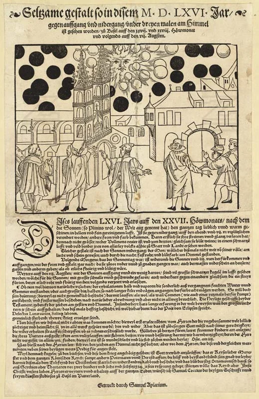
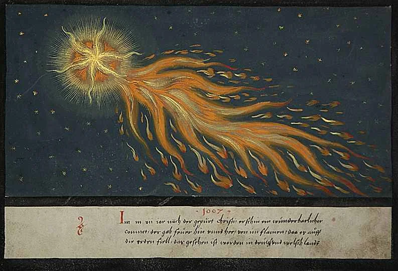

The sun came up wrong over Nuremberg on 14 April 1561.
According to a printed broadsheet that circulated in the weeks after, the dawn sky filled with objects no one could name. Two great blood-red crescents appeared on either side of the sun. Between them floated spheres, hundreds of them, in clusters of four and six, some blood-red, some blue-black, some yellow. Long cylindrical tubes hung among the spheres, three or four balls lodged inside each one, like peas in a translucent pod. Crosses appeared. A great black spear-shaped object pointed downward. The whole spectacle lasted about an hour, and then the objects, whatever they were, seemed to fall toward the earth, trailing smoke. A local printer named Hans Wolff Glaser carved the scene into a woodcut and sold it as a single-sheet broadside.
The broadsheet was not a newspaper in any modern sense. It was a Wunderzeichen, a "wonder sign," part of a genre of cheap print that thrived in Reformation-era Germany. Printers in Nuremberg, Augsburg, and Strasbourg had been producing these sheets for decades, documenting comets, monstrous births, floods, and celestial apparitions. Each event carried the same implicit message: God was speaking, and the faithful had better listen.
Glaser's broadsheet survives in the Wickiana collection at the Zurich Central Library, a remarkable bound set of printed ephemera assembled by Johann Jakob Wick, a Zurich pastor who spent years clipping and saving broadsheets. Without Wick's collector instinct, most of these fragile sheets would have disappeared entirely.
A sky full of geometry
The woodcut itself is startling. Glaser drew the Nuremberg skyline along the bottom of the image, the city's spires and rooftops rendered in clean, familiar lines. Above them the sky becomes an alien catalogue. Spheres are arranged in neat rows and arcs. The cylindrical tubes sit at odd angles. Two enormous black crescents bracket the sun, and between everything, smaller crosses and rods fill the remaining space. The composition is dense, almost decorative, closer to a textile pattern than a landscape.
There is nothing panicked about the image. Glaser worked carefully, imposing order on the chaos his witnesses described. The result feels both documentary and theological: here is what happened, and here is how it fits into a world where the sky is legible.

Five years later, in August 1566, a similar event was reported over Basel. Large black spheres appeared near the sun, moving at speed, seeming to collide and turn red before vanishing. Samuel Coccius, a student and pamphleteer, printed an account. The Basel broadsheet, also preserved in the Wickiana collection, shows fewer objects and a different composition, but the vocabulary is recognisable: spheres, redness, an overwhelming strangeness nobody could file under any known category.
Together, the Nuremberg and Basel broadsheets form a small archive of the inexplicable. They are not unique, though. The Augsburg Book of Miracles (Wunderzeichenbuch), a lavishly illustrated manuscript compiled around the same period, collected celestial and terrestrial prodigies spanning well over a thousand years. Its pages include burning skies, rains of blood, armies of clouds, and suns that split in two. The manuscript, now in a private collection, was produced for a wealthy patron and is far more polished than any street broadsheet. But the logic is identical: the sky is a text, and God is its author.

Modern commentators have tried to match the Nuremberg sighting to known atmospheric phenomena. Sun dogs (parhelia) can produce bright spots flanking the sun. Halos and arcs of refracted light sometimes create crosses and rings. Under certain conditions, ice crystals in the upper atmosphere generate complex optical displays that include multiple suns, coloured patches, and intersecting arcs. Some of these effects can look spherical. A few might, with generous interpretation, appear cylindrical.
"They appeared to fall to the ground as if on fire, and there they slowly faded with great smoke."
Nuremberg broadsheet, 1561
The parhelion hypothesis accounts for some of the shapes. It does not account for all of them. The falling objects, the smoke, the sheer density of the display, and the duration all sit uneasily with any single atmospheric explanation. More to the point, matching the broadsheet's imagery to weather optics assumes that Glaser drew exactly what people saw, which is unlikely. Glaser was an artist working in a tradition. He knew what a prodigy broadsheet was supposed to look like, and he composed his image accordingly.
What the broadsheet doesn't say
The text beneath Glaser's woodcut is brief. It describes the shapes, notes the time and duration, and then pivots to moral instruction. "Whatever such signs mean, God alone knows," the broadsheet concludes, before warning readers to mend their sinful lives. The pivot is formulaic. Nearly every Wunderzeichen broadsheet of the period ends with a similar exhortation. The event exists to prompt repentance; the specifics are secondary.
This is the gap that makes the Nuremberg broadsheet so interesting. Something happened. Multiple people reported it. A printer carved it into wood, added a pious conclusion, and sold copies. But no one attempted an explanation that went beyond theology. The broadsheet sits between journalism and sermon, between reportage and prophecy. It records an event it cannot interpret, and it does not seem troubled by the contradiction.
In the centuries since, the broadsheet has attracted attention from UFO researchers, atmospheric scientists, art historians, and scholars of early modern print culture. Each group reads it through a different lens. The UFO enthusiasts see evidence of contact. The scientists see parhelia. The art historians see a genre piece. The print scholars see the economics of sensation. All of them are partly right. None of them can close the case.
The Nuremberg broadsheet endures because it refuses to resolve. It is a picture of something that was seen, made by someone who believed in a legible cosmos but could not read the particular sentence the sky had written that morning. Glaser gave the event a shape; geometry, ink, paper. The meaning, he admitted, belonged to God.
Four and a half centuries later, we have better optics and better printing. We still don't have a better answer.